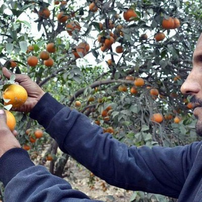
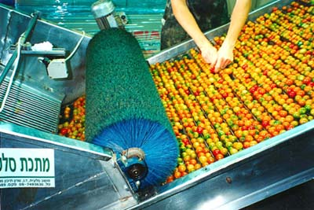
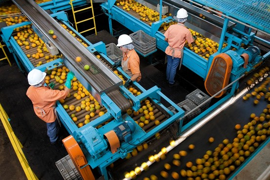
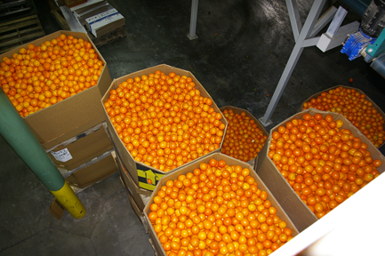

Process
-

Plucking
The step in the process involves the careful plucking of kinnows from the orchards.
-

Sorting
After the plucking is done the the fruit is then hand-sorted and only the ones which are A-Quality are brought to the rocessing facility.
-

Processing
the kinnows are then put on the assembly line for furthur sorting. after sorting is done the fruit is furthur processed by washing, waxing and grading
-

Polishing
Clean and processed kinnows are then polished and furthur sorted.
-

Packaging
The fruit is then packaged and graded and is ready to be sent to the cold storage facility.
-

Export
Chilled Kinnows are the loaded onto the refrigerated vehicles for transportation.
Home of Mandarin